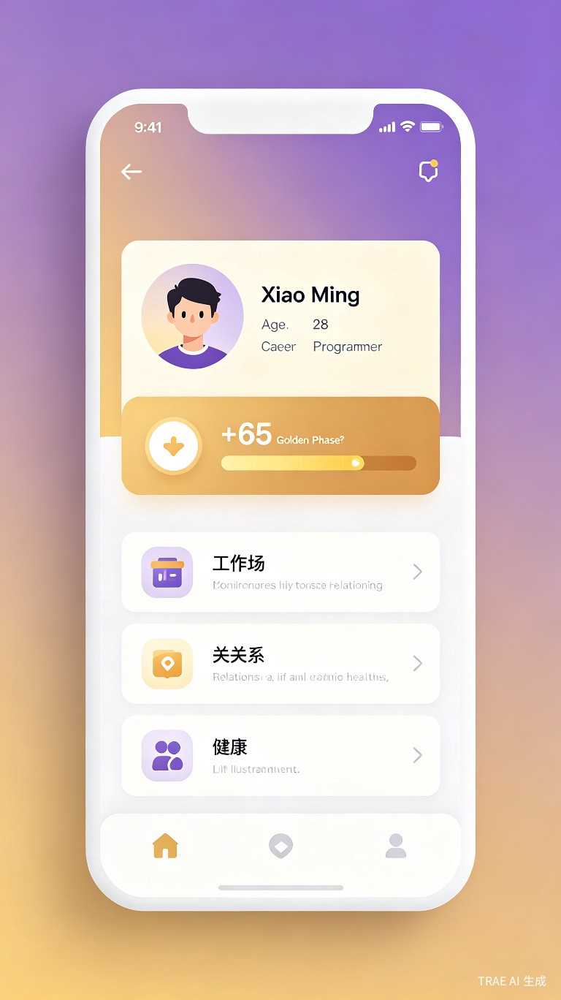
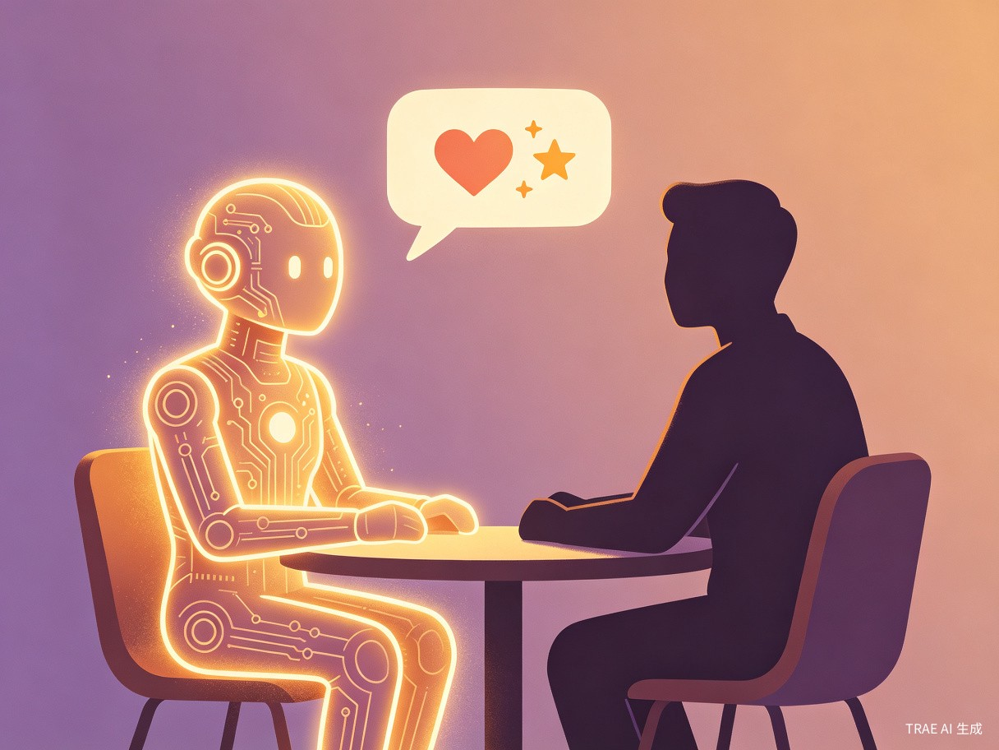

传统人生模拟游戏依赖预设事件模板，玩家很快就会体验完所有内容。我们想让每个人每次打开游戏，都能体验到真正独一无二、千人千面的人生故事。
"AI不是《人生无限》的附加功能，而是它的灵魂。每一次打开游戏，都是一次全新的人生旅程——因为AI，千万种人生，从此无限。"
传统模拟游戏事件固定、缺乏深度叙事，玩家几次后就失去新鲜感。我们利用大模型技术，让AI根据玩家完整状态实时生成个性化事件，实现真正的"无限人生"。
《人生重开模拟器》的火爆证明了人们对体验不同人生的渴望。随着AI技术发展，我们终于可以让每个玩家都拥有专属于自己的、永不重复的人生故事。

AI不是辅助功能，而是游戏的核心机制
不是从题库抽题，而是AI根据你的年龄、职业、属性、运气、历史选择，实时创作专属事件。每次打开都是新故事。
每个NPC都是独立AI，拥有自己的性格、背景、记忆和情感。他们会主动找你聊天、求助、分享，关系随互动演化。
重开时，AI为你撰写800字人生传记，提炼人生主题，生成墓志铭。每一次人生都值得被铭记。
让社交从"看排名"变成"真互助"
遇到职场危机？向CEO好友求助。财务困境？找投资人朋友。AI根据事件类型智能推荐匹配好友，让专业的人帮专业的忙。
帮助好友会消耗你的名望/财富，但大幅提升对方属性。每一次互助都是真实的取舍——帮还是不帮，这是一个问题。
每次互助积累羁绊值，从"泛泛之交"到"生死之交"。羁绊越高，求助效果越好，还能解锁共同人生事件。
求助不是冰冷的数据交换，AI会生成有温度的人生故事——"你盯着手机屏幕，手指悬停在发送键上..."
当玩家遇到裁员危机时，可以向职业匹配的好友发送求助：

当28岁的程序员玩家运气值为+65（高光期）时，AI可能生成这样的事件：
这不是升级，而是游戏模式的根本变革
| 维度 | 传统模拟游戏 | 人生无限 (AI原生) |
|---|---|---|
| 事件来源 | 200个预设模板 | AI根据玩家状态实时生成 |
| 事件数量 | 有限，易消耗完 | 无限，每次都不一样 |
| 个性化 | 基于标签匹配 | 基于完整人生轨迹理解 |
| 叙事深度 | 固定文案 | AI动态叙事，有起承转合 |
| 社交互动 | 预设互动卡片 | AI NPC + 真实好友互助系统 |
| 人生回顾 | 静态时间线 | AI生成人生电影+故事化回顾 |
18-35岁都市年轻人，工作学习压力大，渴望在碎片化时间中获得情感共鸣。喜欢叙事类游戏、文字冒险游戏的玩家。
通勤路上（5分钟处理今日事件）、睡前（3分钟查看轨迹）、周末（10分钟重开人生尝试不同选择）。
现有模拟游戏事件固定，玩几次就腻了；缺乏真正个性化；NPC互动机械化；好友只是排行榜上的名字，无法真正互助；人生回顾只是数据堆砌。
AI实时生成无限事件、AI NPC拥有独立人格、真实好友职业匹配互助、AI撰写人生传记——每次体验都是独一无二的。
"人生无限"不仅是游戏，更是一个"人生体验实验室"。玩家可以：
'AI'游戏模式：AI不是辅助功能，而是核心机制。无限内容生成、真正的个性化、情感化叙事。